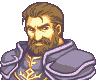

Support Rank C

おまちくださいPlease wait.
あなたは・・・
エトルリアのダグラス将軍ですねYou are... General Douglas of Etruria, aren't you?

いかにもIndeed.
では あなたが
あのエトルリア『大軍将』？Then you're the one they call the "Grand General" of Etruria?
今はただの一兵にすぎぬNow I am nothing more than a single soldier.
そうですか・・・I see...
私はナバタの里の守り手
イグレーヌと申しますI am Igrene, guardian of the village of Nabata.
ナバタの・・・Of Nabata...
はいYes.
ナバタの熱砂の中
侵略者と戦うのが 私の役目Fighting invaders amid Nabata's burning sands is my duty.
そうか・・・I see...
それで わしに なにか言いたいことでも？And so, is there something you wish to say to me?
お約束いただきたいのです
将軍は決してナバタを狙わぬとI would like you to promise me — that you, General, will never target Nabata.
約束は できぬ・・・I cannot make that promise...
なぜです！Why not?!
われらは 騎士だ・・・
主君の命令なら きかぬわけにはいかぬWe are knights... If it's our lord's command, we cannot refuse to obey.
それが まちがっていても？Even if it's wrong?
それが騎士というものだからなBecause that is what it means to be a knight.
・・・・・・......
Support Rank B
ダグラス将軍
先の話の続きですがGeneral Douglas, to continue what we were discussing before —
国として わたしたちの里を
狙わないと約束できないのですか？Can your nation not promise not to target our village?
・・・・・・......
大陸一豊かな国なのに
どうしてですか？Why not, when you're the richest country on the continent?
・・・王が望まなくても わしが望まなくても
事が起こるときはあるからだ...Because there are times when things happen even when the king doesn't wish it, even when I don't wish it.
それは どういう・・・What do you mean by that...?
エトルリアは大国だEtruria is a great nation.
多くの貴族にささえられて成り立っている
中には 心よからぬものも多いIt's held up by many nobles — and among them, there are plenty whose hearts are not good.
そのものたちが大勢をしめれば
王にもわしにも どうすることもできぬIf such men come to hold sway, there is nothing even the king or I can do.
ですが あのような砂漠に
どんな富があると？But what kind of wealth could there possibly be in a desert like that?
富がなくとも・・・自分たちの力を
見せつける相手が欲しいのだEven without wealth... they want someone to show off their power against.
踏みつける弱者がいなければ
己の心は満たされぬWithout the weak to trample underfoot, their own hearts go unsatisfied.
西方も 彼ら心まずしき者たちに
苦しめられていたと聞くI hear the west, too, was tormented by such poor-hearted men.
・・・・・・......
Support Rank A
イグレーヌよIgrene.
なんでしょう
ダグラス将軍Yes, General Douglas?
・・・・・・......
前にも言ったがAs I said before,
わしは王の臣下
そしてエトルリアの将軍I am a vassal of the king, and a general of Etruria.
それゆえ・・・わしは
約束することはできぬAnd so... I cannot make you that promise.
・・・・・・......
だが 努力はするBut I will make the effort.
クーデター派を倒し
王をお救いした勇者たち・・・The heroes who defeated the coup faction and saved the king...
その中に
ナバタの里の者がいたことThat among them was someone from the village of Nabata —
今後決して 彼らの安息を
おびやかさぬようにすべきことand that their peace must never be threatened from now on —
そのことを伝え
必ず 貴族たちを説得しようI will convey this, and I will be sure to persuade the nobles.
・・・・・・
その言葉 確かに聞きました......I have heard those words, and heard them clearly.
今は その言葉で
満足することにしますFor now, I will content myself with those words.
すまぬI'm sorry.